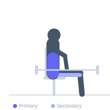
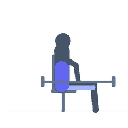

Exercise guide / Seated Good Morning
Seated Good Morning
The seated good morning is performed seated on a bench with a barbell across the upper back, then hinging the torso forward over the thighs. Because the seated position eliminates the hip hinge that characterizes the standing version, this variation more directly loads the erector spinae by forcing the spinal extensors to resist and control trunk flexion without the hip contribution, making it a highly specific lower back strengthening exercise.
Primary muscles
erector spinae
Secondary muscles
biceps femoris long head
semimembranosus
Stabilizers
transverse abdominis
internal oblique
Equipment
Standard Barbell
Flat Bench


Starting position
- Sit on a bench with feet flat on the floor, wider than hip-width for stability. Rest a lightly loaded barbell across the upper traps in the same position as a low-bar squat. Sit upright with a neutral spine.
Setup
- Use a lightly loaded barbell — this exercise is not suitable for heavy loads. Sit near the front of a flat bench. Have the bar in a rack and unrack it in a seated position, or have a spotter assist.
Steps
- Step 1: Begin seated with the barbell on the upper back and spine neutral.
- Step 2: Brace the core and begin to slowly hinge the torso forward over the thighs.
- Step 3: Lower as far as flexibility allows while maintaining a neutral or slightly extended spine — avoid rounding.
- Step 4: Pause briefly at the bottom.
- Step 5: Drive the torso back to vertical by contracting the erectors, not by pushing off the thighs.
Coaching cues
- Spine long — imagine balancing a glass of water on your back
- Only go as far forward as you can keep your back flat
- Return by squeezing the lower back and abs simultaneously
Breathing
- Inhale and brace before hinging forward. Exhale as you return to vertical.
Range of motion
- Torso should travel as far forward as the erectors can control under a neutral or slightly extended spine. For most people, 45–70 degrees of torso lean from vertical.
Tempo
- 3-1-2-0 (3s lower, 1s hold, 2s return)
Common mistakes
- Using too much load — this is a technique and endurance exercise, not a maximum strength lift
- Rounding the lower back at the bottom of the movement
- Pushing off the knees with the hands to return to vertical
Safety
- This is an advanced exercise that places high demand on the erector spinae with no hip contribution to assist — do not load heavily
- Those with lumbar disc issues should consult a professional before attempting
- Always use a spotter or perform inside a rack
Training
- strength: 8–12 reps
- endurance: 15–20 reps
- strength: 3–4 sets
- endurance: 2–3 sets
- Rest: {'strength': 90, 'endurance': 60}